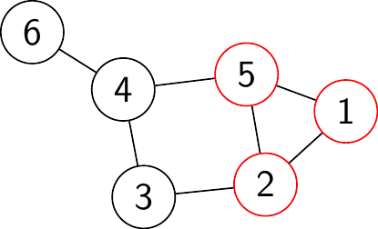

Week 7
Recap from Last Time
Branch and Bound for solving Maximum Clique
- Split the problem into two cases where one gives you a maximum possible size and the lower bound.
- Pick a vertex \(v\). Take out the subgraph \(G_v\) of all nodes connected to \(v\) containing and also produce \(G' = G \ G_v\).
- In the branch containing \(v\), we assume \(v\) is in the maximal clique.
- In the branch with \(G'\), we assume \(v\) is not in the clique.
- For the upper bound, calculate the chromatic number or Lovász number
- For the lower bound, run a fast clique finder heuristic.
QUBO for Maximum Clique
Why did we talk about the equivalent unconstrained minimization (QUBO):
\[H = -\sum_{i=1}^n x_i + 2 \sum_{(i,j) \in \bar E} x_i x_j\]
For the graph above:
\[ \begin{aligned} H = & -x_1 - x_2 - x_3 - x_4 - x_5 - x_6 \\ & + 2x_1 x_3 + 2x_1 x_4 + 2x_1 x_6 \\ & + 2x_2 x_4 + 2x_2 x_6 \\ & + 2x_3 x_5 + 2x_3 x_6 \\ & + 2x_5 x_6 \end{aligned} \]
Formulate an objective \(f = \text{objective} + \text{penalty}\).
A classic example of this formulation is LASSO: \(X \beta - y ||_2 + \lambda ||\beta||_1\).
It should never be favorable to break the constraints of the problem to achieve a more favorable of the objective function.
The graph partitioning problem: We want to get two as-equal-in-size as possible graphs by cutting the graph making the least possible edge-cuts.
How to design a QUBO for the graph-partition problem?
- Input graph \(G = (V,E)\) with \(n\) vertices
- Ising indicator \(s_i \in \{ -1, +1 \}\) for left/right partitions.
- Ising Hamiltonian \(H = H_A + H_B\) where the objective function for edge cut is \[H_A = A \sum_{(u,v) \in E} \frac{1-s_us_v}{2}.\] This formula is the edge-cut.
- Penalty term for partition imbalance (penalty of \(B\) for each edge connecting vertices belonging to different patritions): \[H_B = B\left( \sum_{i=1}^n s_i \right)^2.\]
See https://en.wikipedia.org/wiki/Graph_partition.
Georg’s favorite sentence of all time:
Choose \(A\) and \(B\) so that it is never favorable to violate the penalty term to gain a further reduction in the objective function.
Continuing, how do we pick \(A\) and \(B\)?
- We now have the Ising Hamiltonian with \(H = H_A + H_B\) with \[H_A = A \sum_{(u,v) \in E} \frac{1-s_us_v}{2} \quad \text{ and } H_B = B\left( \sum_{i=1}^n s_i \right)^2.\]
We want to take the best case scenario and the worst case scenario to make sure the penalty term always prevents
Assume \(s = (s_1,..., s_n) \in \{ -1, +1 \}^n\) is a global minimum. Let \(d\) be the degree of the graph (maximal number of edges for any vertex). When fliping one \(s_v\) for some \(v \in V\), we gain a decrease of \(|\Delta H_A| \leq d \cdot A\) in the best case. The best case occurs if \(v\) was in a different partition than all its neighbors.
We have seen that \(|\Delta H_A| \leq d \cdot A\).
The penalty satisfies \(\Delta H_B \geq 4 B\) since \(s_v\) was compensated in equilibrium (the optimal solution) by another variable in the \(H_B\) term (if two spins \(s_1\) and \(s_2\) cancel out each other in \(H_B\), changing one of them yields \(s_1 + s_2 \in \{ -2, +2\}\), thus the squaring in \(H_B\) gives a factor of 4).
We have seen that \(|\Delta H_A| \leq d \cdot A\) and \(\Delta H_B \geq 4B\).
To discourage a violation of the penalty to gain a further reduction in the objective function, we need to enforce that \(\Delta H_B > \Delta H_A\). This surely holds true if
$\(\Delta H_B \geq 4B \stackrel{!}{>} d \cdot A \geq |\Delta H_A|\).
Thus \(B > d \cdot A / 4.\)
- The choice \(A = 1\) and \(B = d/4 + 1\) works.
Notice that if \(x_i \in \{ 0, 1\}\), then \(x_i = x_i^2\). So \[Q = \sum a_{ii} x_i^2 + \sum_{i<j} a_{ij} x_i x_j\] has the form \[(x_1, ..., x_n) \begin{pmatrix} a_{11} & a_{12} & \cdots \\ \vdots & \ddots & \vdots \\ \cdots & \cdots & \ddots \end{pmatrix} \begin{pmatrix} x_{1} \\ \vdots \\ x_{n} \end{pmatrix} = x^T Q x.\]
Lucas, Andrew. 2014. “Ising Formulations of Many NP Problems.” Frontiers in Physics 2. https://doi.org/10.3389/fphy.2014.00005.